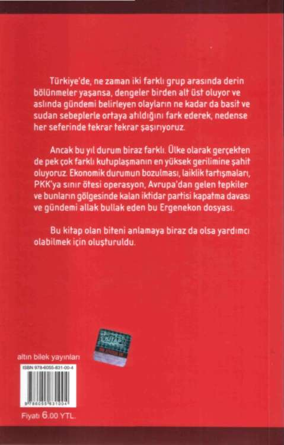

Tuncay Güney'de çıkan belgeler arasında "İşçi Partisi Genel Başkanı Sayın D. Perinçek'e" şeklinde başlayan ve "Garzan eyaleti karargâh komutanlığı" şeklinde biten altında PKK mührü bulunan el yazısı ile yazılmış
belgenin Tuncay Güney'in eline nasıl geçtiğini bilemem.
Bu belge ile ilgili olarak 1998 yılında Ankara Devlet Güvenlik Mahkemesi'nde yargılandım. Bu belgenin düzmece olduğu adli ekspertiz raporları ile saptandı, devlet güvenlik mahkemesi belgenin sahte olduğunu belirterek hakkımda aklama kararı verdi, daha sonra bu belgeyi düzenleyenler televizyonlara çıkarak sahte belge yaptıklarını kamuoyuna ilan ettiler. Kendilerine böyle sahte belge yapmaya bazı kamu görevlilerinin yönlendirdiğini söylediler. Bu şahıslar hakkında suç duyurusunda bulundum, kendileri hapis cezası ile cezalandırıldılar.
Tuncay Güney'in o tarihlerde o belgeyi düzenleyenlerle ilişkide olduğu da daha sonra ortaya çıktı.
Mektupları düzenleyenler hatırımda kaldığına göre, Sami Demirkıran ve bir başka şahıstır. İkinci şahsın adı dava dosyasında ve benim "Bir Devlet Operasyonu" isimli kitabımda var. Bunların mahkeme tarafından ifadeleri a¬
lındı. Ve orada da bu sahte belgeleri tanzim ettiklerini söylediler ve tutanaklara geçti. Biz 1998'deki duruşmadan sonra bu belgeleri ve yapılan tertibi anlatmak için çok sayıda basıp kamuoyuna dağıttık.
ÖCALAN'LA RÖPORTAJ FOTOĞRAFLARI TUNCAY
GÜNEY'DE ÇIKMIŞ
PKK başkanı Abdullah Öcalan ile bütün basının en önde gelen gazetelerinin genel yayın yönetmeni ve başyazarları gibi bende 2000'e Doğru dergisi genel yayın yönetmeni olarak görüşme yaptım. O zaman partinin yöneticisi veya üyesi değildim. Bu görüşme ile ilgili olarak dört ayrı dava açıldı. Dördünden de aklandım.
Görüşmeleri fotoğraflı olarak kendi dergimde dört sayı yayımladım. O görüşmelerde Tuncay Güney yoktu, bulunamaz da, çünkü tarih 1990 öncesidir ve Tuncay Güney karanlık kimliği dolayısıyla benim yanında bulunabilecek bir kimse değildir. Orada PKK görevlileri de fotoğraf çekti, bu fotoğrafların PKK ile MİT arasında bir anlaşma sonucu MİT'e verildiğini İsveç'te bulunan Mahmut BAKSI'dan öğrendim. O da, o sırada PKK kampında bulunan kız kardeşinden öğrenmiş. Fotoğrafların MİT adına Tuncay Güney tarafından Lübnan'da, PKK yöneticilerinden teslim alındığını, Tuncay Güney'in gevezeliklerini nakleden arkadaşlarından öğrenmiştim. Bu fotoğraflar gizli değil, zaten ben yayınlamışım, ancak MİT
ve Tuncay Güney'i oraya gönderen kuruluşun bu fotoğraflar karşılığında ne verdiği bir soru konusudur.
PKK İLE İŞBİRLİĞİ YAPANLAR KİMLER
Bu gün siyasal çözüm adı altında Cumhurbaşkanlığı koltuğunda oturan Abdullah Gül PKK'nın temsilci olarak atadığını belirttiği DTP yöneticileri ile Çankaya'da görüşmeler yapmaktadır. Tayip Erdoğan Büyük Ortado
ğu Projesinin Eş başkanı olduğunu on bir ayrı konuşmada itiraf etmiştir. BOP haritasında Türkiye bölünmüş gösterilmektedir.
Bu harita NATO toplantılarında duvara yansıtılmış ve Türk Komutanları toplantıyı terk etmişlerdir. Ve şu anda Türkiye'de iktidar koltuğunda oturanlar türban ve diğer konularda PKK ile aynı cephede yer alarak Türkiye'yi federasyona götürme ve bölme planları içinde yer almaktadırlar. Bu uygulama yürütülürken Türk Ordusu ve İşçi Partisi gibi bu planlara direnen askeri ve sivil örgütlenmelere karşı tertipler düzenlenmekte psikolojik savaş faaliyeti yürütülmektedir. Soru bütünüyle bu kapsamdadır ve kamu görevinin kötüye kullanılmasıdır.
OPERASYONUN, TERTİPTEN İBARET OLDUĞU BU
SORUDAN DA ANLAŞILMAKTADIR
Tuncay Güney beyanında, Doğu Perinçek'ten Sami Hoştan'ın hap işi yaptığını öğrendiğini, Doğu Perin¬
çek'in isteği üzerine bu konuyu Veli Küçük'e anlattığını, onun da "Sami'yi Ömer Lütfü Topal'ın yerine koyarak biz hata yaptık" demesi de yürütülen operasyonun bir tertipten ibaret olduğunu ispatlamaktadır. Benim Sami Hoştan'la en küçük bir dolaylının-dolaylısı bir ilişkim olamaz.
2001 yılında yakalanan Tuncay Güney'den elde edilen 19 Mayıs 2000 tarihli "Sayın Doğu Perinçek" başlıklı belgede "Dayanışma prensipleri gereği size iletilen
'Mektup, Gazete, Finans' konuları üzerinde yoğunlaşıla¬
rak, işbirliği sağlanmak istenmiştir. Ancak ne yazık ki bu üç konuda da isteksiz kalınmış karşılıklı dayanışma prensiplerine aykırı bir tutum sergilenmiştir" şeklindeki bir belgeyi, ben hiç okumadım. Kaldı ki belge İşçi Partisi'ne yönelik girişimlerin karşıda hiçbir yankı yaratmadığını ve ters çevirdiğini ispatlamaktadır. Bu da Ergenekon uydurmasının bizzat bu kanıtlarla çürütülmesidir.
CUMHURBAŞKANINA GÖNDERİLEN YAZI, VELİ
KÜÇÜK'E DE GÖNDERİLMİŞTİR.
11 Haziran 2003 tarihli İşçi Partisi Genel Başkanlı
ğı amblemli belge içeriğinde "Sayın E.Tuğ. Gen. Veli Kü
çük", "sayın komutanımız", "ikiz sözleşmeleri onaylayan kanun konusundaki görüşlerimi içeren Sayın Cumhurbaşkanımıza arz ettiğim mektup ve ekindeki hukuki açıklamayı bilgilerinize sunarım", "Kanun henüz Cumhurbaşkanımız tarafından imzalanmamıştır; meclise iadesi hukuken mümkündür", "saygılarımla", "Doğu Perinçek İşçi Partisi Genel Başkanı" şeklindeki yazı doğrudur. Yukarıda ifademin başında kendim de bu yazıdan bahsettim.
Bu yazıyı yalnız Veli Küçük'e değil Genel Kurmay Başkanı'na bütün kuvvet komutanlarına ve ordu komutanlarına aynı içerik ve ekleri ile birlikte gönderdim.
Oralardan teşekkür yazıları alınmıştır.
Veli Küçük'ün ikametinde bulunduğu söylenen dokümanlar arasında, Veli Küçük'e hitaben arz ederim ibaresiyle son bulan faks çıktısında "arz ederim" ibaresi, Veli Küçük ile bir hiyerarşik yapı içerisinde olduğumu göstermez. Ben hiçbir zaman Veli Küçük ile bir hiyerarşik yapı içerisinde olmadım ve olmam. İşçi Partisi Genel Başkanlığı üzerinde hiçbir hiyerarşi yoktur. Cumhurbaşkanı da, Başbakan da benim üzerimde değildir. Ama Genelkurmay Başkanlığı Ordu Komutanlığı'na yazdığım yazılarda ve kamu makamlarına yazdığım yazılarda her zaman saygılı ifade kullanırım.
Bu belgeyi görme talebim belge Emniyette bulunmadığı için karşılanamamıştır. Benim ikiz ihanet yasaları ile ilgili mektubum dışında Veli Küçük'e hitaben yazılmış
bir yazım yoktur.
ASKERİ BELGE
İşçi Partisi Genel Merkezi'nde yapılan aramada çıktığı öne sürülen gizli ibareli "1987/1988 - 1988/1989 yılı kış tertiplenmesi 21. J. Sınır Tugay K.Lığının Kış Tertiplenmesi" başlıklı Gürpınar Başkale gibi bölgelerdeki askeri yerleşim yerlerini gösteren bir haritadan haberim yoktur. Bu sorunun bana atılan suçla da bir ilgisi yoktur.
Genel Merkezimiz yedi katlıdır, 50'nin üzerinde oda ve salon vardır. Bana belgenin nerede bulunduğu söylenirse araştırır cevap veririm. 1998 yılındaki yargılamada buna benzer belgeler suç kanıtı gösterilmişti, biz bu belgeleri savunmamız sırasında mahkeme dosyasından kopya ederek aldık ve muhafaza ettik. Zaten mahkeme bu belgelerin bulundurulmasının suç olmadığına karar verdi.
AYDINLIK DERGİSİ, TÜRKİYE'Yİ SAVUNUR
Aydınlık Dergisi, Türk Milletinin aydınlanmasında ve Türkiye'nin savunulmasında özel bir basın görevi yapar. Derginin parasal kaynakları yasaldır ve muhasebe kayıtlarındadır. Benim bildiğim çeşitli kez denetimden geçirilmiştir ve maliye bakanlığının resmi görevlileri hayatlarında bu kadar berrak ve düzgün tutulmuş yasal kayıtlara çok az rastladıklarını belirtmiş ve dergi yöneticilerini kutlamışlardır.
Tuncay Güney, Aydınlık dergisine bir yıl kadar bir süre gider gelirdi. Daha önce Akşam, Milliyet gazetesinde çalışmış bir haberci olarak çeşitli çevrelerle ilişkisi olduğu ve dergiye haber taşıdığı arkadaşlarım tarafından bana belirtilmiştir.
SORUDA, ULUSAL TV DENİYORDU, ADINI BİLE
YANLIŞ BİLENLER BU SORUYU HAZIRLAMIŞ
Soruda Ulusal TV deniyordu, adını bile yanlış bilenler bu soruyu hazırlamış, Ulusal Kanal; adı üzerinde milletin kanalıdır. Milletin ve milletin en güvenilir kesimi olan emekçilerin sesidir. Halktan ortaklar bulmakla ve gönüllü katkılarla kaynağı sağlanmıştır, Maliye Bakanlı
ğının görevli denetçileri tarafından birkaç kez denetim yapılmış ve kaynakları berrak olarak gösterilen, bütün gelir ve giderleri yasallığa titiz bir şekilde dikkat edilerek hesap defterlerine işlenmiş düzgün muhasebesi nedeniyle kutlanmıştır. Yasadışı hiçbir ilişkisi ve hiçbir gelir gideri yoktur.
ULUSAL MEDYA 2001"BAŞLIKLI BELGE
Belgedeki; "Cumhuriyet Gazetesi, oluşturulması zorunlu Ulusal Medya'nın yazılı yayın kanadını oluşturmaya uygun bir isimdir. Görsel yayın kanadını ise; Perin¬
çek grubunun henüz emekleme dönemindeki 'Ulusal TV'
oluşturabilir. Ancak bu televizyonun bünyesinde de ameliyat zorunluluğu vardır. Eğer gerekli ameliyat yapılmaz ise; ne Cumhuriyet ve ne de Ulusal TV, Türk halkının Kemalist ideoloji çerçevesinde birleştirilmesini gerçekleştiremez. Çünkü, halkın gözünde her iki yayın grubu da 'objektif ve 'bağımsız' yayın organı olarak değerlendirilmemektedir" şeklindeki yazı, eğer doğruysa ameliyat yapılmasını düşünenler, ameliyat yapamadıklarına göre amaçlarına ulaşamamışlardır. Bu ameliyat düşüncesi bile Ulusal Kanal ile ameliyat düşünenler arasında bir bağ olmadığını ispatlamaya yeter.
CUMHURİYET GAZETESİ HAKKINDA
Cumhuriyet Gazetesi bizim değer verdiğimiz sayın İlhan Selçuk'un yönettiği, Türkiye'nin aydınlanmasına hizmet eden bir gazetedir. Başarılı olmasını isterim, bunun ötesinde aramızda organik bir bağ yoktur. Cumhuriyet Gazetesi ile Ulusal Kanal arasında Reklam takas anlaşması var, aynı anlaşma Tercüman ve Yeniçağ gazeteleri ile Ulusal Kanal arasında da var. Yayın organları birbirlerine destek amaçlı anlaşma yaparlar. 1998 yılında sayın İlhan Selçuk, o zaman Esenyurt Belediye Başkanı olan sayın Gürbüz Çapan, sayın Ferit İlsever ve ben birlikte İstanbul'da Armada Oteli'nde yemek yedik. Yemekte ortak bir televizyon yapmayı görüştük. Ulusal Kanal, elindeki frekans ve yayın lisansını koyacaktı. İlhan Selçuk ve Gürbüz Çapan da çevrelerinden sermaye bulacaklardı ve ortak bir televizyon kurulacaktı. Biz 10 (on) Milyon Dolarlık bir televizyon projesi önerdik. Onlar ise çok büyük sermayeli bir televizyon düşündüler. Sonra bu 'birlikte girişim' olmadı. Biz başardık ancak Cumhuriyet ve Gürbüz Çapan makine ve teçhizatlarını aldıkları halde o girişimi sürdüremediler.
YURTSEVER YAYIN ORGANLARI BİRBİRİNDEN
KORKAR HALE GETİRİLMEK İSTENİYOR
"Ulusal Medya 2001" başlıklı belge içersinde, bir bölümde, "İlhan Selçuk kimdir" başlığı ve devamında
"Gürbüz Çapan - İlhan Selçuk - Doğu Perinçek Ve Cumhuriyet Gazetesi" başlığı altında... Perinçek, İlhan Selçuk Ve Gürbüz Çapan'ı bir araya getirerek, finansal sorunla¬
rın üstesinden gelinebileceğini düşünmüştür. Ancak Perinçek'in hesabı tutmamış, kendisinden çok daha deneyimli olan İlhan Selçuk, Perinçek'i devre dışı bırakarak Gürbüz Çapan ile anlaşmasına göre; hisselerin yüzde 40'ını, daha sonra yüzde 60 hisseyi de satın alan Çapan, Cumhuriyet Gazetesinin sahibi olmuştur" şeklindeki yazı, istihbarat raporu kokusu taşıyor. Bizim Armada otelindeki görüşmemizi izlemiş veya dinlemiş olabilirler, ancak burada kullanılan ifadeler, bizim İlhan Selçuk ve Gürbüz Çapan arasındaki dostluk ilişkileri ile bağdaşmayan kaba ifadelerdir. Bu tür sorularla; vatanı, milleti savunan medya birliktelikleri tehdit edilmiş oluyor. Birleşmesi gereken yurtsever yayın organları birbirinden korkar hale getirilmek isteniyor. Ergenekon Operasyonu'nun hedeflerinden biri de böylece ortaya çıkmış bulunuyor.
MAFYA, TARİKAT REJİMİNİ KESİNLİKLE
YIKACAĞIZ
İşçi Partisinde bulunan; "Sayın İlhan Selçuk" diye başlayan 6 Kasım 2002 tarihli mektubun içeriğinde "kurulmakta olan Mafya, Tarikat yönetimini kesinlikle yıkacağız ... Eğer kararlı bir muhalefet çizgisi izlersek, Cumhuriyet gazetesinin satışı 3 ay içerisinde yüz bine yaklaşır ve çok etkili olur" sözleriyle, Türkiye'deki mafya tarikat yönetimini kast ettim. Bu yönetimin yasadışı olduğu, Cumhuriyet yıkıcısı olduğu Yargıtay Başsavcısı tarafından da saptanmıştır. Bu nedenle bu mektuptaki değerlendirmeler önemlidir. Bu mektup aktardığınız kadarıyla bana aittir. Aynı görüşümü yine 6 Kasım 2002 günü Cumhurbaşkanı Sayın Sezer'e yazdığım mektupta da aynı ifadelerle belirttim. Örneğini sunacağım. Aynı tarihler... demek ki aynı günde hem Sayın Cumhurbaşkanına hem de İlhan Selçuk'a fikirlerimi yazmışım.
AKŞAM GAZETESİNDE KADROLAŞMAYA
GİTTİĞİMİZ İDDİASI DA UYDURMADIR
Tuncay Güney'in beyanlarında, Akşam Gazetesi'¬
nde çalıştığı dönemde, Adnan Akfırat'ın, Ferit İlsever'in, Ankara'da da Hasan Yalçın'ın, Paris'te Özcan isimli şa-hısların, Akşam gazetesinin mutemet elemanları gibi çalıştıkları, Hasan Yalçın'ın İstihbarat Genel Başkan Yardımcısı olduğu, Özcan isimli şahsın da Paris muhabiri olduğu, Akşam Gazetesi'nde bir kadrolaşmaya gittiklerini"
söylemesi, bütünüyle uydurmadır. Bizim Akşam gazetesine yönelik hiçbir faaliyetimiz olmadı ve hiçbir gazeteyi bu tür faaliyetlerin konusu olarak düşünmeyiz. Kaldı ki İşçi Partisi'nde istihbarat genel başkan yardımcılığı diye bir görev yoktur. Özcan isimli şahsı da tanımam.
UYDURMA BİR MEKTUBA, "SAYIN PERİNÇEK"
BAŞLIĞININ KONULMASI, BENİ BAĞLAMAZ
Ümit Oğuztan isimli şahıstan el konulan, 10 Mart 2000 tarihli ve "Sayın Perinçek" şeklinde başlayan, "Doğu Perinçek" ve Aydınlık Grubunun Türk siyasi yaşamında varlığını koruması ve gelişme gösterebilmesi ulusal çıkarların gereği olarak değerlendirile gelmiştir. Bu doğrultuda her dönemde örtülü/açık faaliyetlerle pek çok destek çalışması uygulamaya konmuştur. Aksiyonlar karşısında çok daha reaksiyoner faaliyetlere yönelinmesi ise öneri¬
mizdir. Perinçek ve Aydınlık Grubu ile USİAD'ın dayanışma prensipleri çerçevesinde gerçekleştirmeleri beklenen bağış, yardımlar için, başvuruda bulunabilecekleri makam belirlenmiş ve bu vesile ile kendilerine bildirilmesi uygun görülmüştür" şeklinde bir yazı bana gelmedi.
Zaten böyle imzasız karaktersiz yazılara değer vermem.
Yazının uydurma olduğu hemen anlaşılıyor, çünkü yazı bana hitap ettiği halde yazının içinde benden üçüncü bir şahıs olarak söz ediliyor. Uydurma bir yazının üzerine Sayın Perinçek hitabı yine uydurma olarak konulmuş
ama hitap ile yazı birbirini tutmuyor. İçeriği ise bana hiçbir zaman söylenemeyecek sözler. Bana kimse böyle bir yazı yazmaya cesaret edemez.
EROL BİLBİLİK, ŞAHSİYETLİ BİR EMEKLİ
SUBAYDIR KİMSE TARAFINDAN
YÖNLENDİRİLEMEZ
Tuncay Güney'in beyanında, Veli Küçük ve ekibinin Doğu Perinçek'i rahatlıkla kullandığını, Doğu Perin¬
çek'in yanında emekli Deniz Binbaşısı Erol Bilbilik - Erol Mütercimler gibi subay ve albayların bulunduğunu söylemesi, önemsizdir.
Erol Bilbilik şahsiyetli emekli bir deniz subayıdır.
Partimizde Başkanlık Kurulu üyeliği yapmıştır. Kimse tarafından yönlendirilemez. Başı dik bir insandır.
Erol Mütercimler söylenen tarihlerde Fethullah'ın denetimindeki Samanyolu TV'de görev yapıyordu. Bizimle hiçbir ilişkisi olmamıştır. İşçi Partisi ve Genel Başkanı ise; Türkiye'de denetlenemeyen, kendi kararlarını kendi alan belki de tek partidir.
Veli Küçük ile aramızda hiçbir görüşme olmamıştır ki böyle bir yönlendirme düşünülebilsin. Ergenekon ve Lobi politikalarına bakılarak, medya kuruluşlarının kontrol altına alınması ve kendi medya kuruluşlarının oluşturmasının amaçlandığı iddiasını; varsa Ergenekon örgütünün yöneticilerine sormak gerekir. Fakat İşçi Partisi'ni yönlendirebilecek bir kuvvet anasından doğmamıştır. Bunu bütün dünya bilir.
TUNCAY ÖZKAN, ETKİLİ BİR GAZETECİDİR
Benim de hemşehrimdir Tuncay Güney'in; beyanlarında Tuncay Özkan'ın Doğu Perinçek'in adamı oldu
ğunu ve Tuncay Özkan'ı Doğu Perinçek'in yönlendirdiğini söylemesi, gerçek dışıdır. Tuncay Özkan benim hem
şehrimdir. Etkili ve işini iyi bilen bir gazetecidir. Benim yönlendirmeme ihtiyacı yoktur. Gerçek dışı bu ifadeler, 2014 yılında tasarlanan CIA operasyonunun kimlere bulaştırılmak istendiğini ve bütünüyle basın özgürlüğünü hedef aldığını göstermesi bakımından dikkat çekicidir.
DİYARBAKIR'DA TÜRK BAYRAKLI MİTİNGİN
SORGUYA DÂHİL EDİLMESİ ERGENEKON
OPERASYONUNU YÜRÜTENLERİN AYIBIDIR
Diyarbakır'da Türk bayrağıyla miting yapan tek parti İşçi Partisidir. 29 Haziran 2007 günü gerçekleştirilen bu miting muhteşem olmuştur. Diyarbakır'dan Türkiye'ye göz dikenlere Türk Bayrağı gösterilmiştir. Diyarbakır halkı, Türk Bayrağını ve İşçi Partisini bağrına basmıştır.
Daha önceden 2004 yılında ve 2005 yılının 29 Ekim'inde Diyarbakır ilinde ve köylerinde İşçi Partisi olarak Türk Bayraklı ve Atatürk posterli muhteşem mitingler gerçekleştirdik. Diyarbakır emniyetinin yöneticileri, İşçi Partisi'
ni kutladılar. Ve "20 yıldır Diyarbakır'da Türk Bayrağı göremiyorduk sağ olun" diye kutladılar.
Bir emekli general bana o bölgede tugay komutanlığı yaptığını ve insanların eline Türk Bayrağı veremediklerini ama İşçi Partisinin binlerce insanı Türk Bayrağı ile yürüttüğünü bizzat bana söylemiştir. Bu miting her yurttaşa açık olmuştur. Miting faaliyetinin bildirileri afişleri çağrıları basın toplantıları ortadadır. İşçi Partisi dışında yalnızca Türkİş'in adı birkaç basın toplantısında bulunmaktadır. Söylediğiniz Vatansever Güç Birliği adlı örgütle İşçi Partisi hiçbir zaman yan yana gelmez. Bana miting öncesinde çok sayıda heyecan dolu tebrik ve katılma telefonları gelmiştir. Bu telefonlar bizi sevindirir. Telefonlarda karşı tarafta kimin olduğunu şu anda herkesi hatırlayacak kadar anımsamıyorum. Ergenekon soruşturmasını yürütenlerin Diyarbakır'da Türk Bayraklı bir mitingi suç olarak kabul etmeleri, ABD ve AB ile Türkiye'yi bölmek isteyenlerle bazı ortak duygular içinde olduğunu gösterir.
BİR İŞADAMININ ÇİFTLİK EVİNDE VERDİĞİ BEŞ
KİŞİLİK DAVET
Güler Kömürcü'nün, dinlenen telefon konuşmasında "bir işadamının çiftlik evinde verdiği elli beş kişilik davete iş adamları ve değişik kesimlerden kişilerin katıldığından" bahsettiği ve "...Doğu Perinçek vardı biliyor musun?" demesi ile ilgilenmek ayıptır.
Milletin birbiriyle buluşmasını yemek yemesini suç göstermek, bu operasyonun kanun dışılığının vardığı boyutları sergilemektedir. O yemekte Türkiye'nin seçkin opera sanatçıları, keman ustası profesörler sanatçılar yer almış, şarkılar ve türküler söylenmiştir. İbrahim Benli'nin Çatalca'daki bu davetine katıldığını söylediğiniz Yarbay Bahadır Berk'i tanımam. Emniyet Müdürü Adnan Ko¬
nukman bizim Merkez Karar Kurulu üyemizdir.
Davette var mıydı tam hatırlamıyorum. Savcı ise şu anda avukatlık yapan Mehmet Sait Türer olabilir ancak onu da tam hatırlamıyorum. Beni emniyet müdürleri polis evlerinde misafir etmiştir. İbrahim Benli bizim İstanbul 3. Bölge milletvekili adayımızdır. Seçimlerde parti üyesi olduğu için aidat, ödenti ve bağışları olmuştur.
Hepsi makbuzludur ancak,ileri sürüldüğü gibi sponsor tabir edilebilecek bir katkısı olmamıştır.
ABDÜLHAMİT DÖNEMİNE Mİ DÖNDÜK...
AYDINLAR BİRBİRİNE MEKTUP YAZAMAYACAK
MI?
Ümit Sayın'da bulunan belgeler arasında, 4 Mart 1997 tarihli bana hitaben yazılmış yazıda, "Cumhuriyet Devrimleri'nin uygulanmasıyla 'yeni Kemalist bir devrim yapılması' gerektiğine ve bu yeni Kemalist ideolojinin aksiyonlarının ve teorisinin bir an önce yazılı hale getirilmesi gerektiğine inanıyorum" demesi, yazdığım bazı yazıları, İngilizce'ye çevirerek ABD'deki bazı demokratik kurumlara yolladığını yazması, niçin suç kapsamında oluyor? Abdülhamit dönemine mi döndük? Aydınlar birbirine mektup yazamayacak duruma mı geldik?
Ümit Sayın'ın bana yazmış olduğu mektubu tam olarak hatırlamıyorum, ancak içeriğinde herhangi bir suç yoktur. Kutlanacak bir tavır vardır. Bu soru Kemalist devrimi de suç olarak görmektedir. Kemalist devrimi suç olarak görenler, Atatürk'ü yıkamayacaklardır ve girişimlerinin altında kalacaklardır. Bu soru Ergenekon operasyonun Atatürk düşmanı yönelişini ele vermektedir TELEFON GÖRÜŞMELERİ
"ASKERİ MÜDAHALENİN ÇÖZÜM OLMADIĞINI BELİRTİRİM"
(3 Şubat 2008, 54432 numaralı telefon ) Bursa Gemlik'ten aradığı anlaşılan X şahısla telefon görüşmesinde; bir süre türban konularından ve çıkan kararlarından bahsettikten sonra, X şahsın yasamanın yani hükümetin şüpheli hareketleri uzunca bir zamandır. ... müdahale edilecek konumlara gelmiştir" dediği "hukukun dışına çıkıldığından bahsettiğim", X şahsın "... Burada Türkiye Cumhuriyeti Devleti, bekasını koruma gücünü kaybetmiş gibi gözüküyor" dediği, "Devlet düşmanın eline geçti artık. Kaybetmeyi bırak... devleti yeniden kurmak lazım" dediğim, X şahsın da "...Türkiye Cumhuriyeti, bağımsızlığını tüm dünyaya karşı yeniden ilan etmek zorunda. ... ben bunu Turan Çömez'e de, anlatmaya çalıştım" dediği, ilerleyen görüşmede ise yerel seçim öncesinde hükümete karşı bir yapı oluşturulması gerekliliğinden bahsettiğim, X şahsın da "... İşte bu yapı oluşup, kısa zamanda oluşup, varlığını bu millete göstermesi lazım.
Benim aciliyetim paniğim bu. Seçimlerden önce olmalı"
dediği, "Bütün gücümüzle onun için uğraşıyoruz" dedi
ğim bu telefon görüşmesi doğrudur. Bir köylü ile yapılmıştır. Ancak ben hiçbir telefon görüşmesinde askeri darbeyi onaylamam, tersine askeri müdahalenin çözüm olmadığını belirtirim. Bunun dışında devleti yeniden kurmak gerektiği doğrudur. Biz bunu partimizin bütün kararlarında açıklıyoruz. Devleti Atatürk Devrimi temelinde yeniden kurmadan Türkiye bu karanlıktan çıkış yolu bulamaz.
"BÜTÜN MİLLİ KUVVETLERİ BİR ARAYA GETİRMEK"
(4 Şubat 2008, 53759 numaralı telefon) Ünsal Yavuz, Başkent Üniversitesinden aradığı anlaşılan şahısla telefon görüşmesinde; "sayın hocam, saygılar" dedi
ğim, şahsın da "... yeni bir metin verdiler bana, bu Ulusal Strateji Merkezi, onu sizler mi hazırladınız" dediği,
"Evet! Burada bir grup hocamızla ve siyasetçimizle böyle bir 2,5 ay kadar bir çalışma yapıldı. Ben de katıldım. Bunun sonucunda da, çok ince tartışılarak aşağı yukarı 12-13 toplantı sonucunda o hale getirildi hocam" dediğim, şahsın da "Onu bana İzmir'de verdiler. Ege Koop çağırmıştı beni orda, Ulusal Strateji Merkezi'nden bir hanımefendi verdi" dediği, "Mehmet Haberal toplantılar yapıyor ona sizde katılın hocam" dediğim, şahsın da
"Rektör yardımcısı bizim Korkut Ersoy var ben de ondan öğrendim bir liste vermişti ondan sonra İzmir'de ben de kendi payıma düşeni yapmaya başladım... Ben imzaladım bildirgeyi zaten" dediği, "O ayrı, bir de bütün Milli Kuvvetleri bir araya getirip bir siyasal çözüm o bakımdan" dediğim görüşme doğrudur. Görüştüğüm hoca Prof. Dr. Ünsal Yavuz'dur. Ulusal Strateji Merkezi İşçi Partisi'nin tüzüğünde yer alan bir kurumdur. İşçi Partisi'
nin yan organlarındandır. Başında İşçi Partisi Genel Başkan Yardımcısı E. General Servet Cömert bulunmaktadır.
Faaliyetleri yasaldır ve ışık tutucudur.
VATANSEVER DUYARLILIĞI
Emin Gürses'in Mustafa Yarbay isimli şahısla yapmış olduğu telefon görüşmesinin bir bölümünde "Bir süre telefon dinlemeleri hakkında görüştükten sonra Mustafa'nın "Bunlar geçecek ya" dediği, kendisinin "Sen başkasın. Perinçek ile konuşuyordum. Mesaj başka şimdi" dediği, söz konusu telefon görüşmesinde bahsedilen konunun ne olduğu Emin Gürses'e sorulduğunda "Burada Perinçek olarak bahsedilen kişi Doğu Perinçek'tir. Do
ğu Perinçek ile yapılan operasyon hakkında görüşmelerimiz oldu. Perinçek bana bu operasyonun millicilere karşı yapılan bir operasyon olduğunu, özelleştirmeler, vakıflar kanunu, bor maddelerinin satılması, Türk Ordusu'nun İran'a karşı kullanılması gibi başka şeyleri izlemeyi amaçladığını anlattı" demiş, diyorsunuz. Emin Gürses çok doğru söylemiş. Vatanseverlerin bu ülkeyi koruma için nasıl duyarlı oldukları herkes tarafından görülmelidir.
Türkiye düşmanı güçler kuvvetlerinin ötesinde bir işe kalkıştıklarını bilmelidir.
Aynı telefon görüşmesinde "Yıllardır yani fikir öğrendiğimiz bir insan diyor ki, ya komutan yani emekli paşalar mı... darbe yapıyor diyor yani herkes 'ti'ye alıyor artık şeyleri." Hocam asker yapmayacak. Asker mesela Perinçek'ten hep uzak durdu. Kardeşim Perinçek gibi bu konularda profesyonel bir adam bu işte bu örgütlenmede... Oy vereceksin. Ben niye böyle adamları harcayayım.
Ben işin içinde olmam ama bu işte önünü açarım. Öyle bir sürü örgütlenmeler var. Türkiye'de silah üzerine o tür yemin edenler değil Perinçek gibi örgütlenmesi güçlü tavrı da sert... Onların üzerine gelemiyorlar. Perinçek dün meydan okudu. Dedi ki, burada istihbaratçılar var dedi.
Onlardan rica ediyorum, bizden birini tutuklasınlar da göreyim dedi. Onlara zindan ederim İstanbul'u diyor, bak böyle konuşuyor." dediği, söz konusu telefon görüşmesinde bahsedilen konunun ne olduğu Emin Gürses'e sorulduğunda; "Beyanlarım Perinçek'in beyanlarından ibarettir. Perinçek'ten bizzat duyduğum veya basından takip ettiğim beyanları Mustafa'ya aktarmıştım" diyormuş.
Sayın Gürses benim Türkiye karşıtı güçlere karşı kararlılığımı anlatmaya çalışmış, kendisine teşekkür ederim. Emin Gürses'in Bülent isimli şahısla yapmış olduğu telefon görüşmesinin bir bölümünde, "Perinçek'in bir toplantısı vardı. Kadıköy'de söz konusu toplantıda kendisine Sakarya bölgesinde operasyon yapabilirler" dedi
ğim, Emin Gürses'e Organize Suçlarla Mücadele Şube Müdürlüğü'nde alınan ifadesinde neyi kastettiği soruldu
ğunda; "Sakarya'da teröristlere düzenlenen bir operasyon vardı. Bu operasyonu Perinçek bana söylemişti. Bu operasyon yapıldı. Sakarya emniyetinden bu konu araştırılabilir" şeklinde açıklamasına ilişkin; Emin Gürses doğru söylemektedir.
GÜLER KÖMÜRCÜ- İBRAHİM HAKKI AŞKAR
GÖRÜŞMESİ
Güler Kömürcü'nün "Şimdi bak Doğu Perinçek, Mehmet Haberal, ondan sonra Yaşar Okuyan işte ne bileyim Anıl Çeçen daha sayayım bir sürü isim böyle ... Ben ve adamlar Bismillah dakka bîr, başında parti kuralım, parti kuralım... Geldim ve ne parti kurması dedim" şeklindeki konuşmasına ilişkin; Bu toplantılar, eski bakanlarımızdan Kamuran İnan, eski Ekonomiden sorumlu devlet bakanı Ufuk Söylemez, Başkent üniversitesi Prof. Dr.
Mehmet Haberal ve Prof. Dr. Hasan Eren'in inisiyatifiyle başlayan ve basına açık yapılan Milli Egemenlik Hareketi (MEH) toplantılarıdır. Çeşitli partilerden şahsiyetler, üniversite öğretim üyeleri, orgeneraller, kitle örgütleri yöneticileri katılmaktadır. Bir eşgüdüm kurulu oluşmuştur.
Çalışmalar yasaldır ve kamuoyu önündedir. Ayrıca basına yansımıştır. Milli güçlerin birleşmesi Türkiye'yi bölmek isteyen ABD ve Haçlı İrtica tarafından kaygıyla kar
şılanmaktadır.
TEOMAN'LA GÖRÜŞME
Teoman isimli şahısla yaptığınız görüşmede; Ulusal Kanal'ı aradığınız ve Teoman ile görüşmenizde "Şimdi bu bizim, hani CIA ajanı Tuncay ile ilgili bir kapağımız olmuştu ya... Onu bana e-postayla yollar mısın" dediğim görüşme tamamen doğru. Bu konuları incelemek araştırmak bir siyasi parti başkanı olarak görevimdir ve isterse Cumhurbaşkanı olsun, kimse bana bu konuda soru yöneltemez.
ŞULE PERİNÇEK'LE GÖRÜŞME
Yapılan bir toplantının bittiğinden bahsederek
"Gelince anlatırım. Hurşit Tolon'un selamı var sana" dediğim, Şule'nin de "Mehmet'ten de yeniden yazı istemişler" dediği, sizin de "Bence kendisi yazmasın yani; o araştırma görevlisi... Böyle Fethullah hoca bilmem ne polemiklerine fazla girmesin" dediğim doğrudur. Sözü edilen toplantı, Milli Egemenlik Hareketi toplantısıdır. Orada Sayın Emekli Orgeneral Hurşit Tolon da bulunuyordu.
Eşim Şule'ye de selam söyledi. Diğer konu oğlum Mehmet Perinçek ile Moskova'da Rus gazeteleri Fethullah Hoca hakkında röportaj talep etmişler. Üniversitede çalı
şan ve Dışişleri Bakanlığı tarafından altı aylığına Rus ar
şivlerinde çalışma için gönderilen oğlum Mehmet Perin¬
çek'in, Rus gazetelerine uzun boylu röportaj vermesini yararlı bulmadığımı bildirdim. Bunların suçla hiç bir ilişkisi yoktur. Soruşturma, suçun tanımı yapılmadan insanları her türlü ilişkisini, görüşmesini araştıran kanun dışı bir çizgidedir.
Birlikte gözaltına alındığı arkadaşları hakkında Ferit İlsever İşçi Partisi Genel Başkan yardımcısıdır, sonuna kadar güvendiğim, Türkiye'nin yüz aklarından, siyaset adamı ve basın yöneticisidir.
Serhan Bolluk'u otuz yıldır tanırım. Şu anda Aydınlık Dergisi Genel Yayın Yönetmeni, İP Merkez Karar Kurulu üyesi, Türkiye'nin en güvenilir yurtseverlerinden ve aydınlarındandır.
Kemal Alemdaroğlu Türkiye Cumhurbaşkanı olacak nitelikte bir bilim adamı ve aydınımızdır.
İbrahim Benli milletvekili adayımızdır. Tersane işçiliğinden beri tanırım. Vatansever, güvenilir bir iş adamımızdır.
Adnan Akfırat Türkiye Çin İş Geliştirme ve Kültür Derneği yöneticisi ve İP Merkez Karar Kurulu üyesidir. Otuz yıldır tanırım. Gazeteci, yurtsever, güvenilir bir aydınımızdır. Türkiye ile Çin arasında Türk Devleti ve Ticaret Bakanlığı ile işbirliği halinde, Türkiye ekonomisinin gelişmesine ve içine girdiği krizden kurtulmasına katkıda bulunacak çalışmalarını gözlemliyorum.
İlhan Selçuk Türkiye'mizin son yüzyıl değerli aydın ve yazarlarından, 45 yıldır tanırım. Türkiye'nin bütün aydınları ve Atatürkçüleri gibi kendisine çok değer veririm.
SORULAN KİŞİLER HAKKINDA
Mehmet Zekeriya Öztürk, Ajan provakatördür.
Mehmet Eymür'e bağlı olarak çalışır. Eskiden Hıristiyan yapılmış, kiliselere sokulmuş, ajan olarak kullanılmış. Yedi sekiz ayrı kimlik taşır, devamlı yalan söyler. Ordudan istifaya zorlanmış ve çıkartılmış emekli subayım diyerek üç dört sene evvel bir süre Ulusal Kanal'da çalıştı. Karışık işler çevirdiği, cebinde farklı kimlikler bulunduğu, geçmişte Hıristiyan olduğu, Ulusal Kanal'a birkaç kez silahlı girmeye çalışması nedeniyle birkaç ay sonra işten atıldı.
Sevgi Erenerol'u gazetelerden tanırım. Türk Ortodoks Patrikanesi sözcüsü olarak bilirim. Mitinglerde görürüm. Kitle örgütü yöneticileri bir grup bayanla iki yıl kadar öncesi ziyaretime geldiler. Güler Kömürcü'yü gazeteci olarak tanırım. Bir görüşmüşlüğüm yoktur.
Sami Hoştan'ı ve Ali Yasak'ı gazetelerden yasadışı bazı faaliyetlere karıştığı nedeniyle ismini duydum, görüş¬
müşlüğüm yoktur.
Mehmet Fikri Karadağ'ı Kuvva-i Milliye adlı örgütün liderleri arasında basında ismini duydum. Yazılarımda bu örgütün adını da vererek bu tür örgütlerin "başı bozuk" örgütler olduğunu ve halkın bunlara güvenmemesi gerektiğini, bu tür başı bozuk örgütlerle Türkiye'nin hiçbir meselesinin çözülemeyeceğini vurgulayarak birkaç kez belirttim. Ümit Oğuztan'ı gazeteci olarak hatırlıyorum, bir görüşmüşlüğüm yoktur.
Kemal Kerinçsiz'i avukat olarak gazetelerdeki faaliyetleri ile tanıyorum. Kendisi ile hiç görüşmedim.
Fikren beraberliğimiz yoktur.
Habip Ümit Sayın İstanbul Üniversitesi'nde do
çenttir. Kendisini tanırım, birkaç kez ziyaretime geldi. Bir ara Adnan Hocacılarla ilişki kurdu, tutarsız davranışlarını gördüm.
Vedat Yenerer'i gazeteci olarak biliyorum.
Emin Gürses'i çok iyi tanırım, değer verdiğim bir bilim adamıdır. Türkiye'nin toprak bütünlüğünü, bağımsızlığını, Atatürk devrimini kararlı olarak savunur. Aydınlık dergisinin yazarıdır. Uluslararası ilişkiler alanında Türkiye'nin yetiştirdiği parlak zekâlardan biridir.
Diğer şahısları tanımıyorum. Ergün Poyraz'ı kitaplarından tanıyorum. Görüşmemiz olmadı. Diğer şahısları tanımıyorum.
Muzaffer Tekin'i gazetelerden biliyorum. Emekli subay, bir kez ziyaretime geldi.
Semih Tufan Gülaltay'ı gazetelerden ismini hatırlıyorum. Bir kez bir telefon görüşmemiz oldu. Bana yönelik suikast ve tertiplerle ilgili olarak kendisinden bilgi sordum. Bana yönelik suikastta Semih Tufan Gülaltay'a görev verildiği yönünde bir ihbar aldık, bu ihbara değer vermemekle birlikte onu da ilgilendiren bir kışkırtma ve tertip kurulabileceği düşüncesiyle kendisine sordum. O
da aynı kanıda olduğunu belirtti. Alparslan Aslan'ı Danıştay suikastçısı olarak tanırım. Herhangi bir ilişkim ve görüşmüşlüğüm yoktur. Zaten olamaz da, kendisinin belirttiği üzere Fethullahçı örgütlenmelere bağlı.
Abdullah Çatlı'yı tanımam, gazetelerden bilirim.
İbrahim Çiftçi Mamak Cezaevi'nde hücre komşumdu, bir kez bir televizyonda sert tartışmamız oldu, en sevdiğim arkadaşım değerli savcı Doğan Öz'ün katlinden yargılandı. Mahmut Yıldırım'ı Yeşil olarak gazetelerden duydum.
Hiç tanımıyorum.
Sedat Peker: Gazetelerden duydum, tanımam.
Fuat Turgut'u Apo davasında avukat olarak gazetelerden tanırım, internette sık sık açıklamaları dolaşır. Partimize üye olmak için İzmir'de başvurdu. Başvurusu reddedildi.
Sormuş olduğunuz diğer şahıslardan hiçbirini tanımıyorum.
İŞÇİ PARTİSİ'NDE BULUNAN BELGELER MİLLİ
ANAYASA BİLDİRGESİ
İşçi Partisi'nde bulunan kişisel bilgisayarda (15) sayfadan oluşan, "Milli Anayasa Bildirgesi" başlıklı yazı içeriğinde "AKP hazırladığı sivil Anayasa Taslağı ile Türkiye'ye ve Türk Milletine karşı yürüttüğü karşı devrim sürecini son hedefine ulaştırmak peşindedir","Ulusal Strateji Merkezinde bilim insanları ve uzmanların katıldı
ğı çalışmalarla bir milli anayasa taslağı hazırlanmaktadır.
Ulusal Strateji Merkezi (USMER) bu çalışmalar sırasında hazırlanmış olan ekteki milli anayasa bildirgesini kamuoyumuza en kısa sürede sunmak üzere imzaya açmaya karar vermiştir" şeklindeki beyanların bulunduğu belge doğrudur. Bildirgenin içeriği doğrudur. Yargıtay Başsavcılığı AKP hakkında kapatma davası iddianamesi ile en yüksek savcılık makamı olarak AKP yönetiminin yasadışı ve Cumhuriyet yıkıcısı olduğunu saptamıştır. Bu açıdan bildirge tarihi önemdedir. Bu bildirge sadece Sa¬
bih Kanatoğlu ve Mustafa Akaydın'a, değerli hukukçu ve bilim adamlarımıza değil, Türkiye'nin bütün seçkin aydınlarına gönderilmiş, çoğu imzalamışlardır.
"KEMALİST MODEL-ULUSAL GENÇLİK HAREKETİ-
DİNAMİK" ADLI DOKÜMAN
Ulusal Kanal ve Aydınlık'ın arşivi Türkiye'nin en zengin arşivlerindendir. İçinde on binlerce cilt kitap, sayfa, belge ve yazı bulunmaktadır. Nerede, hangi odada, hangi gözde bulunduğu belirtilmeyen bu belgelerle ilgili sorular titiz bir yargılamanın konusu olamaz. Kaldı ki; her belge saklanır ve değerlendirilir.
ÇANAKKALE ULUSAL BAĞIMSIZLIK
BİRLİK HAREKETİ
Bana her gün yüzlerce e-posta ve onlarca mektup gelir. Çanakkale Ulusal Bağımsızlık Birlik Hareketi ve
"Değerli Kuvayı Milliye Gönüllüleri" başlıklı, içeriğinde
"Milli karargâh kurma vakti gelip de geçmekte" tabiri bulunan belge, altında birçok kişinin imzasının bulunduğu bir mektuptur. 12 imza var suçla bir bağlantısı yok.
LOZAN MÜCADELESİNDEN SONRA BENİ BİRÇOK
EMEKLİ KOMUTAN KUTLAMIŞTIR
İşçi Partisi'nde bulunan dokümanlar arasında
"Eski Genelkurmay Başkanlarından İsmail Hakkı Karadayı ile telefon görüşmesi (10 Eylül 2002)" başlıklı yazıyı, suç kanıtı olarak önümüze getirenler Türk ordusuna suç yükleme konusunda her türlü ölçüyü bir kenara bırakan bir tutum içine girdiklerini göstermektedirler. O bakımdan bu soru, bu soruşturmayı yürütenlerin suç kanıtıdır.
Beni Lozan mücadelesinden sonra Eski Genelkurmay Başkanlarımız Doğan Güneş Orgeneral Karadayı ve bir çok emekli komutanımız aramış ve kutlamışlardır. Bu telefon görüşmesi doğrudur.
ÖNCÜ GENÇLİĞİ TEBRİK EDİYORUM
İşçi Partisi'nde bulunan dokümanlar arasında;
"başarılarımız" başlıklı bir belgede Öncü Gençlik isimli İşçi Partisi'nin gençlik kollarından bahsedildiği; alt başlıkta ise "Öncü Gençlik 5. Genel Kongresi'nde Türkiye'
nin genel gündemine ilişkin örgütlerimizin militan eylemler yapması kararını almıştık. Bu kararı hayata geçirdik. Böylece Öncü Gençlik tarihinin en fazla eylem yapılan ve bu açıdan en verimli dönemini yaşadık" yazılı belge sanıyorum Öncü Gençlik'e aittir. İfade onlarındır. Öncü Gençliği tebrik ediyorum. Vatan savunmasında, Mehmetçik yürüyüşlerinde, Şehit cenazelerinde, PKK'nın Dağlıca'yı basması ve Mehmetçiklerimizi şehit etmesinden sonra üniversiteyi ayağa kaldıran gençlik hareketlerinde gösterdiği başarı tarihe geçmiştir. Alınan militan eylem kararı yukarıda saydığım eylemlerdir. Zaten öncü gençliğin faaliyeti onları Vatan ve Cumhuriyeti savunmada gösterdiği militan tutumu yansıtmaktadır.
"OSMANLIDAN GÜNÜMÜZE MASONİK
BİLDERBERG ÇETESİ"
İşçi Partisi'nde bulunan dokümanlar arasındaki;
"Osmanlıdan Günümüze Masonik Bilderberg Çetesi" ve
"Örtülü Faaliyetler Bir" isimli belgeleri hatırlıyorum.
"Mafyokrasi" adlı kitabımı yazarken aydınlık arşivinde bulunan Mafya ile ilgili birçok kitap ve belgeyi topladım.
Bunlardan yararlandım.
SEMİH TUFAN GÜLALTAY HAKKINDA
"Görüşme Notları-İşadamı(21 Şubat 2007)" başlıklı, Semih Tufan GÜLALTAY hakkında bilgilerin olduğu belgeyi hatırlamıyorum. 7 katlı bir binada bulunan belgeleri bir kişinin on binlerce yıl yaşasa bile okuma ve öğrenme olanağı yoktur. Bu nedenle iki binada çıkan her belgeyi bana sormanız suçla ilgili değildir. Semih Tufan GÜLALTAY ile ilgili bilgimi en yukarıda kişiler bölümünde anlatmıştım. Bana yönelik bir suikastla ilgili kendisinin bilgisine başvurulmuştur.
İŞÇİ PARTİSİ VURDUMU DEVİRİYOR
"İşçi Partisi vurdu mu deviriyor" başlıklı belgenin içeriğinde ise "Çiller Özel Örgütü Şeması" başlıklı şemayı Aydınlık yazı kurulu yüzlerce bilgiyi değerlendirerek yapmıştır. Benim 1997'de basılan ve yedi basımı yapılan Çiller Özel Örgütü adlı kitapta yayınlanmıştır ve hiçbir dava açılmamıştır. Suçla bağlantısı yoktur.
MİLLİ HÜKÜMETİN BAKANLAR KURULU
"Milli hükümet bakanlar kurulu" başlıklı "Doğu Perinçek-Başbakan, Ferit İlsever-Başbakan Yardımcısı..."
gibi başbakanlık ve bakanlık kadrosunun oluşturduğu bakanlar kurulu listesini seçimden önce halkımıza sunduk. İktidar amacı ile mücadele ettiğimiz için Türkiye'yi hangi yetenekli kadrolarla yöneteceğimizi halkımıza açıkladık. Ayrıca Milli Hükümet programını da Türk Milletine sunduk. Bu program Türkiye yi kurtaracak programdır. Kadro da Türkiye'nin en birikimli kadrolarının bir parçasıdır. Bu sorunun suçla ilgisi yoktur.
ERGENEKON'UN "KİLİT" ADAMI TUNCAY GÜNEY
Tuncay Güney 2000 yılı öncesinde Ulusal Kanal ve Aydınlık'a gelip gittiği olurdu. Bir kez bile karşılıklı oturmuş konuşmuşluğum yoktur. 2000 yılında Veli Kü
çük emekli olduğu sıralarda İstanbul'da CIA görevlileri tarafından ele geçirildiğini ve kendisine 10 yıl ABD'de oturma olanağı sağlandığını, ABD vizesi verildiğini öğrenmiştim. O tarihte araba dolandırıcılığı nedeniyle İstanbul Organize Suçlar Müdürlüğü'nde sorguya çekildi. Emniyet İstihbarat'tan oraya teslim edilmiş. Sorgudan sonra Aydınlık Dergisi'nde hatırladığıma göre Nisan 2001 tarihlerinde onun sorgusuyla ilgili iki önemli yazı yayımlandı.
O yazılarda Tuncay Güney'in düzmece ifadelerine dayanılarak Türk Ordusu'na karşı bir tertip yürütülmek istendiği belirtiliyordu. Tuncay Güney hakkında yürütülen soruşturmada suç bulunmadığını, bu nedenle DGM Başsavcısı'nın talimatıyla dosyanın kapatıldığını ve el konan belgelerin iade edildiğini o zamanın Organize Suçlar Şubesi Müdürü Adil Serdar Saçan Hürriyet gazetesine açıkladı. Tuncay Güney'in bu olaydan sonra ABD'ye götürüldüğü, orada New York Institutes adlı CIA' ya bağlı paravan kuruluşta ve Kanada'da Türkiye düşmanı, Ermeni soykırımını savunan, Müslümanlığa saldıran ve Yahudilik ile Hıristiyanlığı savunan yayınlar yaptığını öğrendik. Bu yayınlar onun yabancı devlet kontrolüne girdiğini bir kere daha belgelemiş oldu. Bu yayınlarda ordu düşmanlığı ve Türk düşmanlığı, İslam düşmanlığı hezeyan ölçülerinde ve imzalı olarak sergilenmektedir.
Tuncay Güney'in kişiliği Ergenekon adlı soruşturmanın hangi kaynaklardan beslendiğini, hangi devletler tarafından tetiklendiğini ortaya koyan çok önemli bir kanıttır.
Herkes için uyarıcıdır.
İLHAN SELÇUK'TAN
SAVCIYA NASİHATLAR
Ergenekon Operasyonu kapsamında gözaltına alınan Cumhuriyet Gazetesi İmtiyaz Sahibi ve Başyazarı İlhan Selçuk, dünkü köşesinde Ergenekon soruşturması savcısı Öz'e operasyon konusunda 'nasihat' verdi.
İlhan Selçuk Cumhuriyet gazetesindeki 'Pencere' isimli köşesindeki 'Bizim Savcıya 'Abi' Nasihati...' başlıklı yazısında şunları yazdı: "... Gelelim sevgili savcımıza... Nasıl bir tehlike yaşadığının farkında mı? Sanırım değil... Evi bastıkları saatlerde, daha sonra polislerle yolda, Emniyet'
te ve savcılıkta bana bir şey olsaydı, pattadak nalları havaya dikseydim, neler olacağını sevgili savcım düşündü mü?... Damgayı yiyecekti: - Katil savcı!.. Yazık olacaktı sevgili savcımıza. İşin altından ömür boyu kalkamayacaktı.
Savcı bey anlaşılıyor ki çok ağır bir yük üstlenmiş, altından kolay kolay kalkılamayacak bir yük...
Sorgulamadaki karşılıklı konuşmalardan sezinledim ki bu yük onu tüm yaşam boyu ezebilir... Ne düşünüyordu:
- İlhan Selçuk'un evini sabaha karşı basarım, suç belgelerini ele geçiririm..."
Operasyonun fos çıktığını savunan Selçuk'un yazısında 'Savcıya nasihatler şöyle devam etti: "Ergenekon dosyasını yaymak; yazarları, fikir adamlarını, emekli komutanları, muvazzafları da içine alarak sonuçta laik orduya ilişkin bir dava harekâtına dönüştürmek akıl kârı değildir...
Savcımız durumu bir daha gözden geçirmeli... Ki
şinin kafasındakilerle 'realite' arasında bir uygunluk olmadı mı iş tersine döner, dava dosyası da çuvallar...
İlhan Selçuk'a gece baskınında kapsamlı düşünemeyen, kendi kariyerini bile tehlikeye atabilecek kararlar alabilen sevgili savcım, 'Düşünen Adam' heykelini sanırım biliyordur...
Savcım 'Düşünen adam' olmalı... Bu yalnız ülke için değil, kendisi için de gerekli bir temel koşul..."
VELİ KÜÇÜK'E 200 SORU
Küçük'ün sorgusunun önemli bir kısmı, kendisinin ve diğer sanıkların evindeki dokümanlara dairdi. Polis dokümanları tek tek okuyup, anlamını ve nasıl bulduğunu sordu, ana yanıt: Hatırlamıyorum...
Emekli Tuğgeneral Veli Küçük'ün sorgusunun önemli bir kısmını kendisinin, Tuncay Güney'in ve emekli Binbaşı Zekeriya Öztürk'ün evinden çıkan Ergenekon dokümanlarıyla ilgili sorular oluşturdu. Polis dokümanları tek tek okuyarak Veli Küçük'e ne anlama geldiğini ve nasıl eline geçtiğini sordu. Sorular ve bazılarına Küçük'ün verdiği yanıtlar şöyle:
Ergenekon üyesi değilim: Ergenekon isimli gizli bir örgütlenmenin olduğu, örgütün beş daire komutanlı
ğı, iki daire başkanlığından oluştuğu, sadece Ergenekon başkanı tarafından bilinen 'Operasyon Dairesi Komutanlığı' altında bir yapılanmanın olduğu, amacının devleti ele geçirmek olduğu' yönündeki ifadelerin bulunduğu
"21. Yüzyıl'da Kemalist Hareket' başlıklı iki sayfalık dokümanı kim yazdı? Ergenekon'un lideri kim? Ergenekon'
a üye misiniz? Küçük'se bu yapılanmanın Tuncay Güney tarafından hazırlanmış olabileceğini söyledi. Ergenekon'a üye olmadığını savundu.
Gazete, TV sorusu: 'Cumhuriyet Gazetesi ile Ulusal TV'nin hisselerini elinde bulunduracak olan yeni bir anonim şirket kurulmalıdır' denilen doküman ne amaçla yazıldı, neden elinizde bulunduruyorsunuz? Küçük, dokümanın (Doğu Perinçek'in oğlu) Mehmet Perinçek tarafından verilmiş olabileceğini, ilgilenmediği için üzerinde düşünmediğini söyledi.
Klasik yanıt: 'MİT ve Medya Ajan Gazeteciler'
dokümanı neden hazırlandı, neden evinizde bulunduruyorsunuz? Bu soruya 'Hatırlamıyorum' yanıtını verdi.
Postayla geldi: Evinizde bulunan 'Fabrikatör',
'Örtülü faaliyetler', 'Reaksiyon', 'Biyografi', 'Arenadaki sanat gladio sanatçılar', 'Şirket ve köstebek', 'Ermeni sorunu kilise devleti', 'Fundamentalist terör', 'Kanal 6 Analiz' başlıklı dokümanlar kim tarafından, neden hazırlandı? Kü
çük, bunların bir kısmını Tuncay Güney'in vermiş olabileceğini, bazılarının konferanslarda verildiğini, bazılarının postayla geldiğini söyledi.
Lümpen gençlik: 'Kemalist Model Ulusal Gençlik Hareketi Dinamik Ulusal Güç Birliği ve Kuvayı Milliye Cephesi' raporundaki lümpen gençlik ne tarz insanlardan oluşuyor, bunların örgütlenmesinde yapılan faaliyetler nedir, bu kapsamda eylem yapıldı mı? Bilgisi olmadığını söyledi.
Genelkurmay denetiminde mafia: Octobus (State Organized Crime) Mafia' isimli dokümanda yazılı '.. öncelikle yapılması gereken bir zamanlar Pentagon'un yaptığı gibi Genelkurmay'ın denetiminde yepyeni bir mafia örgütlenmesinin gerçekleştirilmesidir' ifadeleri, teoriyse¬
nin kim olduğu soruldu. Küçük, dokümanın bir konferansta kendisine verildiğini sandığını belirtip, içeriğini okumadığını söyledi.
Yine bilmiyorum: Tuncay Güney'den elde edilen
'Ergenekon Analiz Yeni Yapılanma', 'Lobi Çok Gizli',
'Birleşik Komün Girişim' gibi belgeler kim tarafından yazıldı? Herhangi birime sunulmakta mıdır? Küçük bilgisinin olmadığını söyledi.
Suikast notları: Evdeki aramalarda bulunan İstanbul'daki bir toplantıda Veli Küçük, Sedat Peker gibi isimlere suikast yapılacağı yönünde tutulan bilgi notu, çeşitli yerlerde görevli askerlerden gelen 'Sayın paşam arz ederim' başlıklı istihbari bilgi notlan, bazı kişilerin PKK'lı olduğuna dair mektup, Ramazan Akyürek'in 2001 yılına ait sicil raporları, Muammer Karabulut 'Milli Güç Platformu Sözcüsü' imzalı bildiri, l'den 94'e kadar numaralandırılmış çekler ve bunlara iliştirilmiş notlar ele geçirildi. Kü¬
çük'e tek tek sorularla bu notlar ve adı geçen kişileri tanıyıp tanımadığı soruldu. Küçük kendisine çeşitli zamanlarda bu tür mektup ve notların geldiğini ancak hepsini incelemediğini söyledi.
'Akyürek'i severim': Evinde sicil raporu bulunan
'Emniyet Genel Müdürlüğü İstihbarat Daire Başkanı Ramazan Akyürek'i tanıyor musunuz?' sorusuna Veli Kü
çük şöyle yanıt verdi: "Ramazan Akyürek benim sevdi
ğim bir meslektaşımdır... Fotokopisini getirdiler. Ben de dosyaya koymuşum.
'Faksla geldi': Atabeyler'le ilgili bilgilerin bulunduğu dokümanı kim, ne amaçla yazdı? Küçük, söz konusu mesajın şirketin faksına gönderildiğini söyledi.
Behiç Aşçı notu: Ajandasındaki avukat Behiç Aşçı'nın ölüm orucunu bitirmesiyle ilgili not soruldu.
Küçük, Aşçı'nın ölmesi halinde örgütün eylem yapacağının söylenmesi üzerine not aldığını söyledi. 'Sedat'ın dosyası Yargıtay 6. Dairede', 'Ziya Bandırmalıoğlu duruşması' gibi notları konuşmalar sırasında aldığını söyledi.
Diğer sanıklarla ilişki: Küçük'e gazeteciler Vedat Yenerer, Güler Kömürcü, Ortodoks Kilisesi Basın Sözcüsü Sevgi Erenerol'le telefon görüşmeleri soruldu.
Küçük, günlük konular hakkında görüştüğünü söyledi.
Dink ifadesi: Avukat Kemal Kerinçsiz'le yaptıkları bir görüşme sorulunca, Dink'in öldürülmesiyle ilgili şikâyetle ilgili ifade vermesi gerektiğini konuştuklarını söyledi.
Susturucu ihtiyaç: Bir ajandadaki 'Susturuculu tabanca lazım, uzaktan kumandalı patlayıcı lazım, illegal faaliyetlerde kullanılan orijinal malzemeye ihtiyaç var' gibi notlar soruldu. Van İl Jandarma Komutanlığı döneminde not almış olabileceğini belirtti.
MİT belgesi: Evinde ele geçirilen 2 Şubat 1993 tarihli MİT tarafından Başbakanlığa hitaben yazılmış resmi belge ele geçirildi. Uğur Mumcu'yu CIA denetimindeki İsrail 'GANDA' birliklerinde eğitim gören altı kişilik bir timin öldürdüğünün anlatıldığı belgeyi hangi amaçlarla edindiği soruldu. Kocaeli Jandarma Komutanı olduğu dönemde, bölgesiyle ilgili olabileceği için kişiye özel gönderildiğini söyledi.
Uyuşturucu sorusu: Güney'in 'Hoştan'ın Veli Kü
çük ve JİTEM'in yaptığı uyuşturucu trafiğinde yer aldığı'
yönündeki ifadesi soruldu. Bu ifadeleri Küçük, 'hayal mahsulü' diyerek cevapladı. Hoştan'la yaptığı diğer konuşmalar hatırlatılarak, 'Hoştan'ın en küçük bir mağduriyet ya da problemde derhal sizi aradığı, sizin de yardımcı olmaya çalıştığınız görülmektedir' denildi. Türk cumhuriyetlerindeki çevresinden istifade etmek için aramış olabileceğini söyledi.
Sabancı suikastı: Tuncay Güney'in Özdemir Sabancı suikastının imha edilmesi gerekip imha edilmeyen uyuşturucudan kaynaklandığı iddiası soruldu. Cinayeti Çatlı'nın azmettirdiği, Küçük'ün 'Yanlış yapıyorlar" diyerek tepki gösterdiği yönündeki iddialarla ilgili Küçük,
"Hayal mahsulü" dedi.
'Emrettiğiniz yapılanma': Evindeki bir dosyada
"Hatay ve İskenderun'da emrettiğiniz yapılanmanın ve organize milli refleks oluşturma çabalarımıza sessiz ve dikkatli şekilde devam ediyoruz" yazıyor. Küçük, görev gereği tanıdığı İskenderun'daki bir kişiden dosyanın geldiğini söyledi.
Çiftçi sorusu: Küçük'e Ergenekon'un öldürttüğü öne sürülen İzmirli İşadamı İbrahim Çiftçi'yi tanıyıp tanımadığı soruldu. Önce Çiftçi'yi tanımadığını söyleyen Kü
çük, ifadesinin devamında arkadaşlarının arkadaşı olarak tanıdığını anlattı.
Veli Küçük, polise saatlerce ifade verdi.
Veli Küçük ismi yıllar boyunca derin devlet-maf¬
ya-siyaset üçgeninin ortasında anıldı. Susurluk Skandali'
nda adları geçen hemen herkesin ortak noktalarından biri, onunla bağlantılı olmalarıydı. Daha sonra 'Yeşil' kod adıyla bilinen JİTEM tetikçisi Mahmut Yıldırım'ın kullandığı telefonun onun üstüne kayıtlı olduğu ortaya çıktı.
Susurluk Kazası'nda ölen Abdullah Çatlı ile son telefon görüşmelerinden birini yaptığı da savcılık incelemeleri sırasında belirlendi. Ayrıca Küçük'ün, hepsi de Susurluk Skandalı'nda adları geçen Sami Hoştan, Ömer Lütfi Topal, Haluk Kırcı gibi pek çok kişiyle telefon konuşmaları yaptığı öne sürülmüştü.
Ancak Küçük ne TBMM Susurluk Komisyonu'na gitti, ne de skandalla ilgili olarak hakkında adli bir soruşturma açılabildi. Ancak savcılığın yaptığı suç duyurusu üzerine iddiaları araştırmak üzere üç generalden oluşan bir komisyon kuruldu. Onlar da herhangi bir suç unsuruna rastlamadı. Küçük, Kocaeli İl Jandarma Alay Komutanı olduğu sırada 'Adapazarı-İzmit-Sapanca' üçgenindeki Kürt işadamlarına yönelik suikastlar meydana gelmişti.
1993 yılında Emekli Binbaşı Cem Ersever'in öldürülmesinin şüphelisi ise Veli Küçük'ün adamı olduğu söylenen
'Yeşil' yani Mahmut Yıldırım'dı. Yıllar sonra karanlık bağlantıları ortaya çıktı. Danıştay saldırısını gerçekleştiren Alparslan Arslan'ın Veli Küçük ile çekilmiş fotoğrafları bulundu. Küçük bunları 'foto-montaj' diyerek açıkladı.
Avukatı Erdal Doğan da Hrant Dink'in, öldürülmeden önce TCK 301. maddeden yargılandığı duruşmalarına Veli Küçük'ün gelmesiyle çok tedirgin olduğunu anlatmıştı.
Ama o hiç konuşmadı, ta ki Ergenekon Operasyonu'nda gözaltına alınana kadar...
Veli Küçük'ün ifadelerinin bir kısmını İşçi Partisi Genel Başkanı Doğu Perinçek ile ilgili sorular oluşturdu.
Küçük'ün evinde bulunan ve Perinçek tarafından gönderilen fakslar 'arz ederim' diye bitiyordu. Polisin 'Arz ederim' ifadesinin hiyerarşik bir yapıyı gösterip göstermediği sorusuna Küçük'ün yanıtı "Kullanmış olduğu ifadeler tamamen kendi tarzıdır" oldu. Küçük başka kişilerin 'arz ederim'li faksları sorulunca da aynı yanıtı verdi.
İfadelerde bir başka ilginç bölümse Kızılelma Koaliasyonu'yla ilgili. Polis, önce Perinçek'i nereden tanıdığını sordu: "Hatırlamadığım bir yerde karşılaştım. Ulusal Kanal'da röportaj yapma teklifinde bulundu... Kabul etmedim. Bir telefonda oğlunun Rus filolojisinden mezun olduğunu, Lenin Üniversitesi'nde araştırma yapacağını söyledi. Görüştük." Küçük bu ifadesinden sonra sorulmadan Kızılelma Koalisyonu'nun ortayı çıkışını anlattı:
"Türk milliyetçiliğinden bahsetti. Ben de kendisine '30
Ağustos'ta Ülkü Ocakları ile beraber Taksim Meydanı'na niye çelenk koymuyorsunuz?' diye söyledim. Pek beklemiyordum ancak olayı çok sıcak karşıladı. Hoşuma gitti.
Bilahare İstanbul Ülkü Ocakları Başkanı tanıdığım Levent Temiz'i çağırarak aynı teklifi ona söyledim ve bir araya getirdim. Bu olay dahi basında gereksiz spekülasyonlarla Kızılelma İttifakı yönünde yorumlar yapıldı."
Emekli Tuğgeneral Veli Küçük'e Ergenekon yapılanmasıyla ilgili dokümanlarda görülerek sorulan sorulardan biri ilginçti. Tuncay Güney'in de evinde bulunan
'Lobi' kodlu 'Birleşik Komün Girişim' başlıklı evrakta Er¬
genekon'un güvenlik şirketi ve protokol-halkla ilişkiler şirketi kurması öneriliyor. 'Uluslararası Özel Güvenlik AŞ.' başlığında "21. Yüzyılda giderek artış gösterecek olan terör ve MAFİA (yasadışı organize suç örgütleri) grupları, ülkelerin en önemli sorunları arasında yer alacaktır. Bilinen bir gerçektir ki özel güvenlik şirketleri istihbarat birimlerinin arka bahçesi olacaktır. Güvenlik şirketinin yönetim kurulu başkanlığına, istihbarat birimlerinde uzmanlaşmış emekli bir albay getirilecektir. Şirket bünyesinde yer alacak tüm personelin subay kadrolarından oluşturulması uygun görülmüştür" kısmının altı çizilmiş ve yanına el yazısıyla "Veli Kü.." yazılmıştı. Bu doküman sorulduğunda Veli Küçük şu yanıtı verdi: "Bahsettiğiniz Veli Kü... nün ben olup olmadığını ve kim tarafından yazıldığını da bilmiyorum. Emekli bir albayın bu oluşumun başına getirileceği şeklinde bir değerlendirme var. Ancak o tarihte ben generaldim." Ancak Küçük emekli olduktan sonra eski İstanbul Valisi Erol Çakır ve eski Narkotik Şube Müdürü Nihat Kubuş ile Stratejik Güvenlik Koruma ve Eğitim adlı bir şirket kurmuştu. Hâlâ ortağı olduğu şirketin bir şubesi de Dink suikastı sonrası çok tartışılan Trabzon'daydı. Küçük, şirketin içinde neden emniyet birimlerinde görev yapan kişilerin olduğu, nasıl istihbarat toplandığı sorularına "Fikrim yok" dedi.
Ayrıca ifadelerden Susurluk sanıklarından eski polis Ziya Bandırmalıoğlu'nun da Küçük'ün özel güvenlik şirketinde çalıştığı anlaşılıyor. Küçük, "Benim hem¬
şehrimdir. Bizim şirketimizde güvenlik projeleriyle ilgilenir. Yine böyle bir proje almamız söz konusu olduğu için görevlendirmiştik" diyor.
Polis sorgusunda Veli Küçük'ün MHP'nin içinde bir oluşuma gittiği de anlaşılıyor. Polis bu konudaki sorusuna Sedat Peker ile Veli Küçük'ün dinlemeye takılan bir konuşmasını okuyarak başladı. Konuşma kaydında Veli Küçük, MHP içinde Ümit Özdağ'ı desteklemesi için aralarında bugün milletvekili olan siyasiler ve gazetecilerinde de bulunduğu kişilerle görüştüğünü anlatıyor. "Yeni bir oluşum yaptık" diyor. Bu oluşum konusundaki sorulara Veli Küçük şu yanıtı verdi: "Ümit Özdağ siyasi arenada bir yerlere getirmeye çalışıyorduk. Yani Özdağ'ın MHP
içinde belirgin etkinliğe girmesini arzu etmiştim... Bu konuyu görüşmede ismi geçen tüm gazetecilerle görüştüm.
Görüşmede bahsettiğim oluşum Özdağ'ın MHP içinde bir yere getirilmesi içindi. Bu benim siyasi tercihimdir. Sedat Peker'in bir desteği olmadı." Küçük, "MHP yönetiminin değişmesini neden istediniz?" sorusuna, "İlgilenmemin tek nedeni Özdağ'ın da yönetime girmesi arzusunda olmamdı" yanıtını verdi. Özdağ Bahçeli'ye karşı MHP Genel Başkanlığı'na aday olacağını açıklamış, ancak partiden ihraç edilmişti.
3 Kasım 1996'da meydana gelen Susurluk Kazası'
ndan sonra emekli Tuğgeneral Veli Küçük'ün adı pek çok kez gündeme geldi. 'Yeşil', Abdullah Çatlı, Alaattin Çakıcı, Ömer Lütfi Topal, Sedat Peker'le ilişkisi tespit edildi.
Ancak 12 yıl boyunca sorulara yanıt vermeyen Küçük, ne çağrıldığı TBMM Susurluk Komisyonu'na gitti, ne de hakkında adli soruşturma açılabildi. Küçük, Ergenekon Operasyonu'nda gözaltına alındığında yıllardır yanıtlamadığı soruların sorulma zamanıydı. Sorular ve genellikle kısa olan yanıtları şöyleydi: Sami Hoştan isimli şahsı tanıyor musunuz?
Tanırım, 1983'te Edirne İl Jandarma Komutanı iken arkadaşımın vesilesiyle tanıştım. Edirne kritik bölge olduğu için istihbarat elde edebileceğimi düşündüm Topal ile ortak olduğunu öğrenince uzak durdum. Üç kez telefonla görüştüm. Onun dışında yakın birlikteliğimiz olmadı. Kumar işi yaptığını biliyorum, uyuşturucu işinin içinde olduğunu bilmiyorum.
Mahmut Yıldırım'ı tanır mısınız?
Hiç görmedim, tanımıyorum. Ne Van ne de Ağrı Alay Komutanı iken irtibatım olmadı.
Susurluk davası olarak bilinen olayla bir bağlantınız var mı?
Susurluk olayı içinde değilim. Ancak o olayda bulunan Emniyet Müdürü Hüseyin Kocadağ, Sedat Bucak'ı yakinen tanırım. Olayı bana Sami Hoştan telefonla bildirdi. Balıkesir Emniyet Müdürü Nihat Camadan'ı aradım...
Mehmet Özbay isimli kişinin Çatlı olabileceğini söyledim.
Mehmet Özbay'ın Çatlı olduğu daha önce Doğu Perinçek tarafından açıklanmıştı... Camadan'a Bucak'ı mümkün olduğu kadar yakın bir hastaneye kaldırmasını söyledim.
Benim Susurluk'taki kazayla ilgim ve alakam bu kadardır.
Ali Balkan Mete'yi (Susurluk raporunda adı geçen eski Habur Gümrük Müdürü) tanıyor musunuz?
Tanıyorum. Bu kişi gümrükte görevlidir. 1987 yılında Edirne'den ayrıldıktan sonra bir daha kendisini görmedim.
